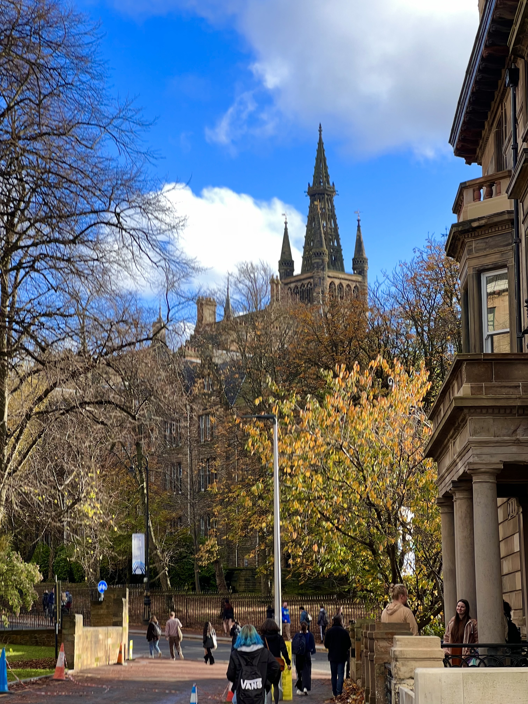
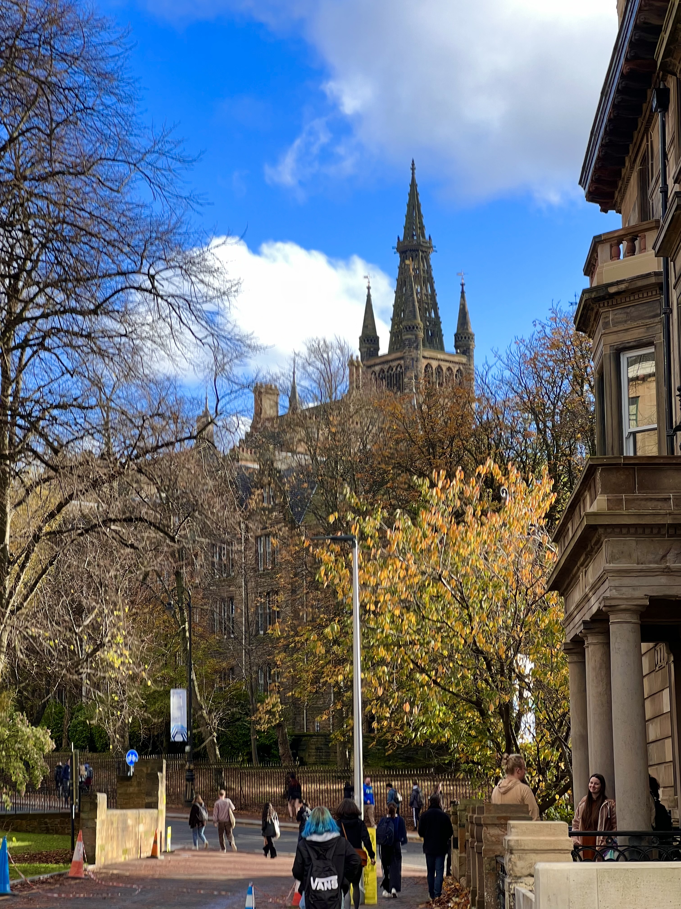

Why is photography necessary for cultural preservation?
Independant learning Task 1: Review of CSS
Revision of CCS: After reading the articles and playing around with CSS I found a few pieces of inspiration to carry over to my website once it is done. Mainly to do with fonts and background styles, I am still keen to keep my website sleek and clean, but I think a natural background colour for the website will make it look less clinical, and the correct fonts will compliment this nicely. I played around with an off white colour that is close to grey or silver to get this desired backround affect, it allows the background to be muted and not to striking, to allow for complete focus on the photos and messages.
Lab Task 2:Create CSS sheet
- I have changed the background colour to one that allows for a sleek look that will be complimented by striking photos.
- I have changed the font to allow for a less dated look, i wanted it to look modern and sleek so this font seemed appropriate.
- I also changed the font colour itself, after playing around with a few colours i felt a muted light navy would look best, and would compliment photos well.
 
